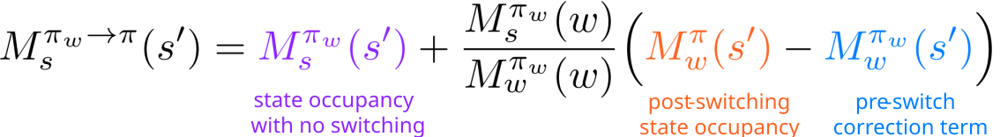
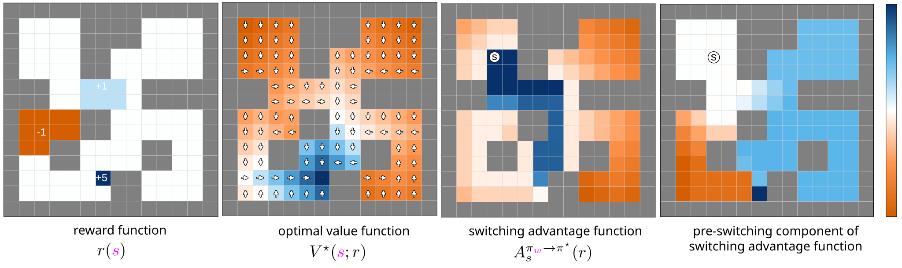
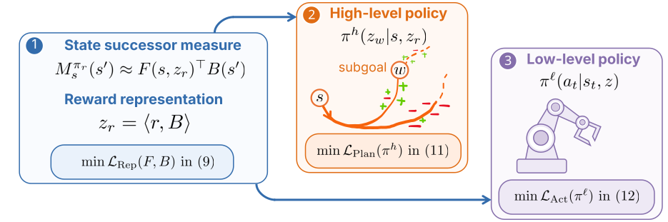
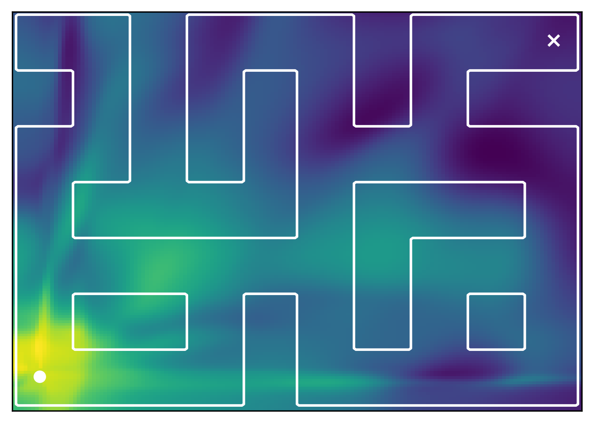
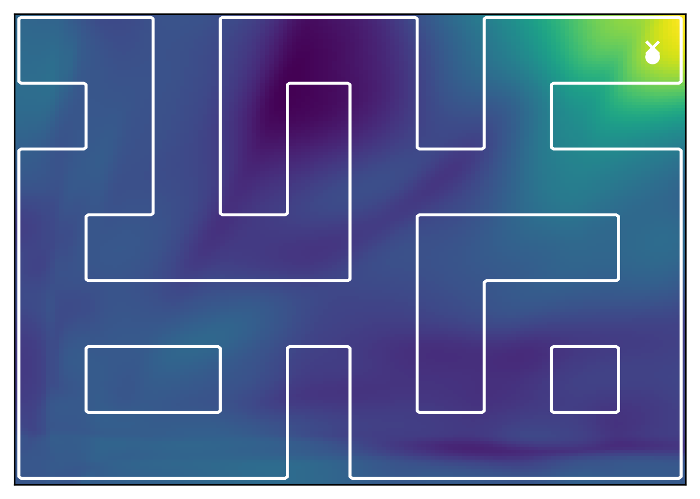
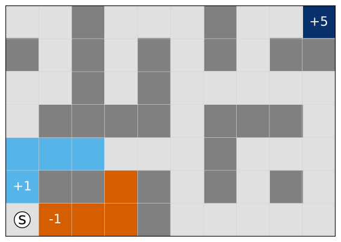
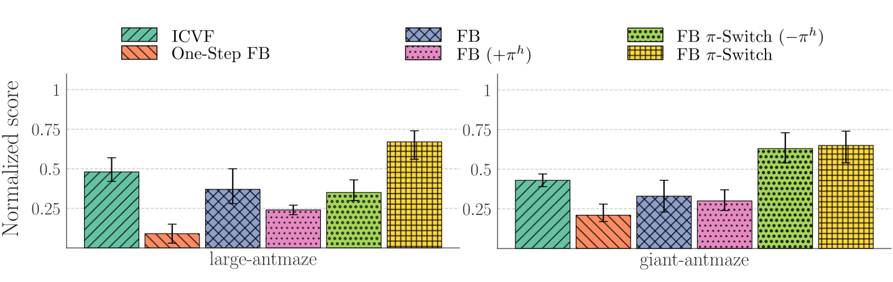

Reinforcement learning agents often struggle with long-horizon decision-making. A common strategy is to decompose difficult tasks into smaller subproblems using hierarchical control.
Most hierarchical methods rely on manually designed temporal abstractions, fixed subgoal horizons, or goal-conditioned objectives. While effective in navigation settings, these assumptions become restrictive for more general reward functions.
In this work, we introduce switching successor measures, a framework that enables hierarchical behavior to emerge directly from learned successor representations. Our key insight is that hierarchical structure is already implicitly encoded in classical successor measures. Instead of learning hierarchy separately, we show how to recover both a high-level policy that selects intermediate subgoals and a low-level policy that executes local behavior from a shared learned representation.
Building on this idea, we propose FB $\pi$-Switch, a hierarchical zero-shot reinforcement learning algorithm that supports arbitrary reward functions, does not require fixed subgoal horizons, and learns hierarchical behavior without additional supervision.
FB $\pi$-Switch achieves strong performance on both goal-reaching and tasks defined by more general reward functions.
Consider an agent solving a long-horizon task defined by a reward function \(r\). Rather than optimizing the task globally from the outset, we study a hierarchical strategy in which the agent first selects an intermediate subgoal \(w\), follows a local policy toward that subgoal, and subsequently switches back to a globally efficient policy.
This perspective leads to the notion of a switching successor measure, which models the future occupancy distribution induced by switching policies at an intermediate state. Our key observation is that hierarchical structure is already implicitly encoded inside classical successor measures. In particular, we show that switching successor measures can be derived directly from standard successor representations without requiring additional hierarchical training objectives or supervision. Our main theorem shows the following equivalence:

This theorem formalizes the relationship between classical successor measures and their hierarchical switching counterpart. It shows that standard successor representations already contain sufficient information to reason about intermediate subgoals and policy switching. As a consequence, hierarchy does not need to be learned as a separate mechanism, but instead emerges naturally from the structure of the representation itself.
Building on this result, we introduce a switching advantage function that quantifies whether switching through a subgoal improves long-horizon performance relative to directly following the global policy. As a straightforward consequence of our main theorem, we have: \begin{align*} A_s^{\pi_w \to \pi}(r) = V^{\pi_{w}}(s;r) + \frac{M^{\pi_{w}}_s(w)}{M^{\pi_{w}}_w(w)} \Big( V^\pi(w;r) - V^{\pi_{w}}(w;r)\Big) - V^\pi(s;r) \end{align*}
The switching advantage provides a principled criterion for selecting useful intermediate states. Unlike prior hierarchical reinforcement learning approaches, our framework does not rely on fixed subgoal horizons, naturally supports general reward functions beyond navigation settings, and allows subgoals to emerge directly from the learned representation.
Together, these results establish that hierarchical planning can be recovered directly from standard successor measures, enabling hierarchical zero-shot reinforcement learning without additional hierarchy-specific learning procedures.

We instantiate switching successor measures within the forward–backward reinforcement learning framework, yielding FB $\pi$-Switch for hierarchical zero-shot control.

The approach first learns reward-conditioned successor representations via action-free expectile regression, encoding long-horizon dynamics and transferable structure. A high-level policy then performs planning in representation space by selecting latent subgoals that maximize the switching advantage. A low-level controller is trained to execute actions conditioned on these subgoals. At test time, the high-level policy proposes subgoals while the low-level policy executes them, enabling hierarchical generalization from a single representation.
Most importantly, this representation enables us to approximate switching advantage function $A_s^{\pi_w \to \pi_z}(r_z)$ as follows: \begin{align*} A_{\mathrm{FB}} (s,w,z) := F(s,z_w)^\top z + \frac{F(s,z_w)^\top z_w }{F(w,z_w)^\top z_w} \Big( F(w, z) - F(w,z_w) \Big)^\top z - F(s,z)^\top z \end{align*} This implies that switching advantage function can directly be maximized from learned representation, since both successor measures and value functions are linear in the representation space.
Goal-reaching tasks. We evaluate FB $\pi$-Switch on AntMaze, a challenging continuous-control benchmark from OGBench that requires both long-horizon planning and complex locomotion. Across multiple maze environments, FB $\pi$-Switch achieves performance comparable to specialized goal-conditioned methods while consistently benefiting from hierarchical structure. Even without a high-level policy, the learned representations outperform other non-hierarchical baselines, highlighting the strength of our action-free expectile regression approach to representation learning.

Initial state

Goal state
General reward tasks. We evaluate FB $\pi$-Switch on extended AntMaze tasks with distributed rewards defined over multiple spatial regions, creating challenging long-horizon planning problems beyond standard goal-reaching benchmarks. On the right you can interactively visualize the reward landscape for different mazes and tasks. FB $\pi$-Switch achieves the strongest overall performance and remains robust across both Large and Giant mazes. Unlike goal-conditioned approaches designed for single-target rewards, our framework naturally handles distributed reward landscapes, enabling composition of behaviors across regions and improved performance on more general tasks.


FB $\pi$-Switch shows that hierarchical behavior can emerge directly from learned successor representations, without requiring expert trajectories or hand-crafted temporal abstractions. By combining high-level planning and low-level control within a shared representation space, the method enables hierarchical zero-shot reinforcement learning from a single learned model. Across both goal-reaching and more general long-horizon tasks, FB $\pi$-Switch consistently improves over non-hierarchical baselines, highlighting the potential of successor representations to bridge local control and global planning.
@article{stojanovic2026ssm,
author = {Stojanovic, Stefan and Proutiere, Alexandre},
title = {Switching Successor Measures for Hierarchical Zero-shot Reinforcement Learning},
journal = {arXiv preprint arXiv:2605.13207},
year = {2026},
}